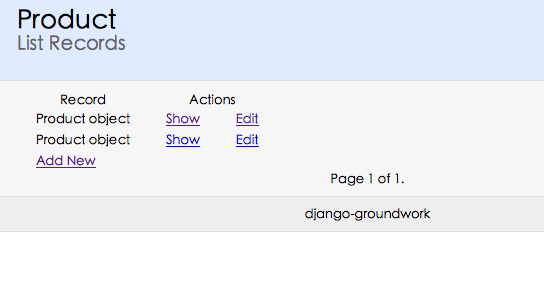
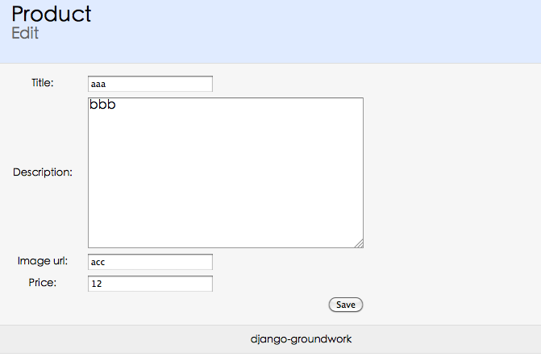

Model 之外：Django 也可以有 scaffold¶
Rails 有一个无用的“神奇”功能，叫做 scaffold。能够在 model 基础上，自动生成 CRUD 的界面。
说它无用，是因为 Rails 的开发者 David 说，“scaffold 不是应用程序开发的目的，它只是在我们构建应用程序时提供支持。当你设计出产品的列表该如何工作时，你依赖于“支架”“生成器”产生创建，更新和删除的行为，然后在保留这个“动作”时你要替换由“生成器”生成的行为。有时候当你需要一个快速接口时，并且你并不在乎界面的丑陋，“支架”就足够用了。不要指望 scaffold 能满足你程序的所有需要”。
说它神奇，是因为在 Rails 中你不清楚他是怎么实现的。只告诉你一句话：约定优先于配置。只要名字 xxx，就会 xxx。说得人云里雾里，认为 Rails 真是一个伟大的框架。
在 Django 的世界中没有这种无用的东西。但是如果你一定要，可以很容易地创建这么一套东西。下面我们就在 depot 项目中引入一个“插件”。前面说过，app 可以在多个 project 之间很容易的复用，我们要引入的就是一个第三方的 app，无需修改，只需要简单配置即可使用。
这个 app 叫做 django-groundwork。它不实现具体的功能，而是扩展了 manage.py 的命令，使得通过命令行可以生成一些代码/文件。
下载 django-groundwork 的代码：
$ git clone https://github.com/madhusudancs/django-groundwork.git
$ ls django-groundwork
AUTHORS README.rst
LICENSE django-groundwork
将其中的 django-groundwork 文件夹复制到 depot 文件夹，然后在 settings.py 中加入该 app:
INSTALLED_APPS = (
#'django.contrib.auth',
#'django.contrib.contenttypes',
#'django.contrib.sessions',
#'django.contrib.sites',
#'django.contrib.messages',
#'django.contrib.staticfiles',
# Uncomment the next line to enable the admin:
# 'django.contrib.admin',
# Uncomment the next line to enable admin documentation:
# 'django.contrib.admindocs',
'depotapp',
'django-groundwork',
)
即完成了安装。
安装后，使用 $ python manage.py help 可以看到，列出的可用命令中多了一个 groundwork 。其语法是：
$ python manage.py groundwork appname ModelName1 ModelName2
接下来使用这个 app 为 Product 生成 scaffold:
$ python manage.py groundwork depotapp Product
就会生成所谓的scaffold。
此时运行开发服务器，就可以访问下面的地址：
http://localhost:8000/depotapp/product/list/
访问 Product 列表，并链接到 create，edit，view 等界面。
图一 Product List
图二 Product Create
